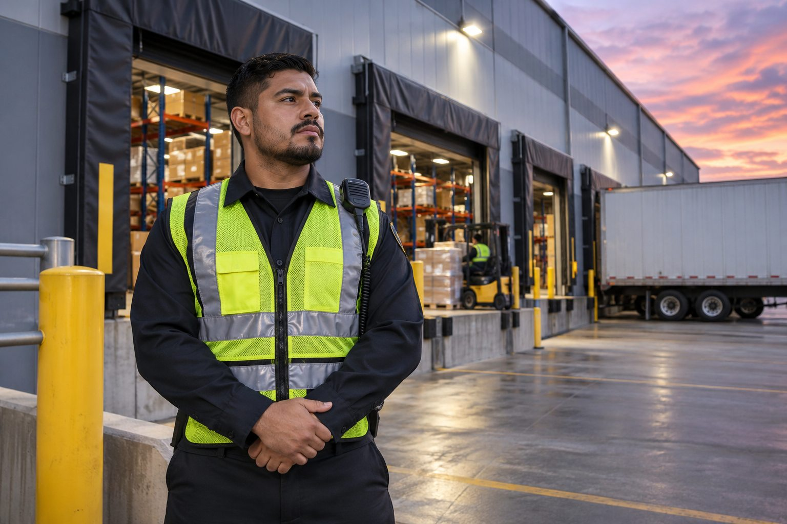

Warehouse Security Guard Services for Loading Docks and Inventory

Warehouse security begins where access changes hands
A warehouse can have locked doors and cameras but still need people to manage the movement of drivers, visitors and staff. Loading docks are active thresholds where deliveries, pickups and shift changes overlap. A security plan should identify who is authorized to enter, who verifies credentials and who is responsible when a driver arrives outside the normal schedule. Guard services can support these procedures as part of a broader site security program.
Match guard duties to the actual facility
Start with a map of vehicle gates, pedestrian entrances, loading docks, trailer storage areas and interior spaces with restricted access. Document the hours during which each area is used. A guard post may be appropriate at a primary entrance, while patrol coverage may be useful across yards or exterior doors. Duties can include observation, access log maintenance, checking credentials under site policy, reporting unusual activity and notifying designated contacts. Define the scope clearly rather than assuming one guard can watch every location at once.
Plan for shift changes and after hours deliveries
Operational handoffs create opportunities for missed information. Establish written procedures for scheduled vendors, unexpected arrivals and lost badges. Confirm which manager can authorize an exception and how incidents are documented. Work with site operations so security procedures do not obstruct emergency exits or necessary safe movement. For loading dock hazards, coordinate with safety staff and follow applicable workplace requirements. A guard service is one control among several and cannot guarantee that inventory loss will be prevented.
Request a site specific guard proposal
A useful quote should identify coverage days and hours, expected duties, access points, reporting expectations and whether the assignment calls for armed or unarmed personnel. Paradigm Security Services provides security guard services and can discuss warehouse coverage in its service area. Request a Quote with the facility location, approximate schedule and main access concerns so the proposal can reflect the actual operation.
Warehouse and Logistics Security · Request a Quote